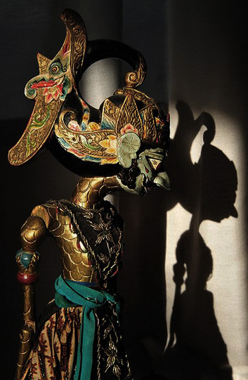

Emplazamiento
Plaza Viriato, 1
Todos los sábados de julio de 19:00h a 01:00h.
Cada sábado estará ambientado según el lugar de origen de los títeres representados. Dispondremos de luces, música ambiente y comida propia de cada región mientras se llevan a cabo representaciones en los tres teatros disponibles durante el evento. Además contaremos con exposiciones de títeres de cada región representada. Ven y disfruta de este evento multicultural y artístico único en Valencia.
Sábado 7
WAYANG KULIT (títeres javaneses).
Teatro de sombras protagonizado por títeres de varillas y su sombra. Las marionetas se construyen generalmente en cuero troquelado y pintado y tienen brazos móviles (una varilla central unida a la cabeza y dos varillas que conectan con las manos). Miden entre 40cm y 80cm de altura. Las marionetas actúan entre una fuente lumínica y una cortina o telón sobre el que se proyectan las sombras.
Sábado 14

NINGYO JOHRURI BUNRAKU (teatro de marionetas japonés).
Cada marioneta es manipulada generalmente por tres personas, excepto los personajes secundarios, que suelen ser más sencillos. Los titiriteros aparecen a la vista de los espectadores. Además de ellos se encuentra la figura del narrador, quien acompañado por la música del shamisen, relata la historia poniendo voces a los personajes.
Sábado 21
MARIONETAS DE VARILLAS (títeres chinos).
Las marionetas se componen de una funda de tela en forma de camisola sobre la cual se fijan la cabeza, las manos y los pies. El titiritero mueve cada uno de los hilos con sus propios dedos. En las representaciones se ven a las personas que manejan los muñecos y van acompañados de una orquesta. Además existen tres tipos diferentes: grande, mediano y pequeño.
Sábado 28

ROI NUOC (títeres vietnamitas).
Están hechas de madera, normalmente de higuera, meticulosamente esculpidas, policromadas con alegres colores y esmaltadas. Se mueven a bastante distancia, desde atrás, con varillas, perchas y cuerdas, por titiriteros ocultos tras pantallas de tela o toldos. Las marionetas sobre el agua de Vietnam constituyen un arte milenario único en el mundo.